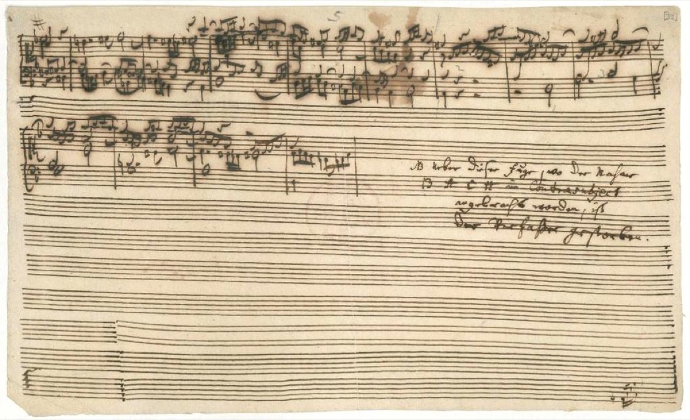

The Art of Fugue: one theme, all of fugue

Around 1742 — the Goldberg Variations barely off the press — Bach began the most abstract project of his life. The surviving autograph contains a cycle of fugues, each headed with his austere Latin term Contrapunctus, and every one of them grows from the same plain D-minor subject. No occasion called for it, no patron commissioned it, and no genre of the day had a shelf for it. What it proposes is the idea he had drilled into beginners for decades, executed now at the scale of a life's work: take one musical thought and develop it completely — this time, through every species of fugue and canon the discipline knows.
The cycle is arranged by ascending rigor. First come simple fugues on the subject. Then counter-fugues, in which the subject does combat with its own inversion — the same melody turned upside down and set against itself. Then double and triple fugues, which oblige the subject to coexist with one and then two further themes; then strict canons; and finally a pair of mirror fugues playable entire in inversion — flip the whole texture upside down, every voice, every interval, and the music remains correct. It is the kind of feat that sounds like a parlor trick and is closer to a proof: a demonstration that the laws of counterpoint hold in both directions, conducted not in a treatise but in sound.
In his final years Bach returned to the cycle, revising and expanding it for engraved publication, and added among other things a culminating fugue on three subjects. The third of those subjects spells, in German note-names, B-flat–A–C–B-natural: B–A–C–H. After a lifetime of counterpoint the signature enters the cathedral, at last, as a subject.
And that final fugue breaks off mid-phrase in the surviving manuscript. On the page, in his son Emanuel's hand, stands the most famous marginal note in music: "at this point... the composer died." The note is not literally true — the handwriting of the fragment predates the final illness, and the missing ending may even have existed separately; the work's own card will walk through the scholarship. But as curated legend the sentence out-performs every fact in the file. Generations of listeners have heard those empty staves as the most eloquent silence in music: the project of demonstrating everything, interrupted by the one thing no counterpoint absorbs. The timeline flags the legend as legend, and declines to pretend it has no power.
What happened next previews the entire second arc of this story. The sons brought the cycle to print in 1751, the year after their father's death, and the world answered with a shrug: a few dozen copies sold, and the engraved plates were eventually offered for sale at the value of their copper. The most complete demonstration of fugal art ever attempted was, for a time, worth more as metal than as music.
One question the print leaves open has shaped the work's whole reception: no instrument is specified. The music stands in open score, four voices on four staves, and for a long time that fact underwrote a reading of the work as pure abstraction — counterpoint for the eye, theory to be studied rather than sounded. That reading has yielded. The modern consensus, resting on the keyboard-shaped evidence in the writing itself, is that the cycle is playable, and meant to be, at a keyboard. The distinction matters more than it may appear: this is theory as music, not theory instead of it — the most learned document Bach ever assembled, addressed finally to hands and ears.
If the timeline's counterpoint thread has a destination, this is it. The promise made long ago in the Inventions — one idea, honestly and completely developed — is here executed on a single theme at the scale of a summing-up, begun with no deadline but mortality's and left, by the narrowest of margins, just short of finished.
Continue with the era essay: Leipzig III: the summing-up, or return to the promise this work fulfills: the Inventions and Sinfonias.
Autograph P 200 (c. 1742) and the 1751 original print (Bach Digital)
Wolff, The Learned Musician, ch. 12
→ full bibliography & links